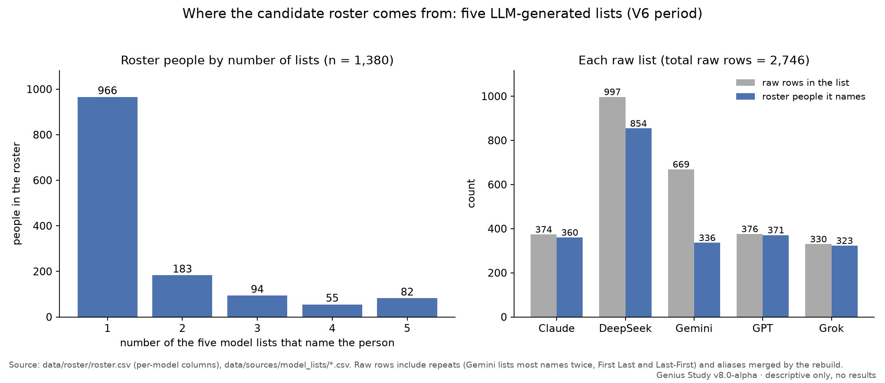

Genius Study
studyv8 in progress
Where do the people history remembers as geniuses stand on God, nature and law? This study rebuilds the record from sources, one person at a time.
Runs on: Grok · one Grok Bot drafts person records from web search and the cited pages; blind audit runs check them (unreviewed drafts)
What it is
- Lane A describes what the public record shows about each person's view of God and nature, with every quote sourced and checked.
- Lane B is a labeled belief: that learning lawful order early may pay off. It's written so it can fail. Lane A doesn't depend on it.
- The candidates come from five LLM-generated lists (Claude, DeepSeek, Gemini, GPT, Grok), merged into one roster of 1,380 people. 441 of them are core.
How it works
- One file per person, built from primary texts and scholarly sources, with exact page or paragraph locators.
- Five axes (locus, cause, ledger, authority, scope), each scored 0–4, from an intervening God (0) to lawful, non-intervening order (4). Every score has a certainty level, capped by the kind of source it rests on.
- The mid-basin test flags people who hold that God is a transcendent person, distinct from the world, while describing nature as running on law (with at most a stated, limited exception), with both judgments coded at certainty 0.7 or higher.
- Several blind audit runs check the draft records against their sources; see the repo.
Status
- Latest release: v8.0-alpha (prerelease). It has the rebuilt roster, schemas, validators, coding guide and the first draft records. It has no results.
- Progress: 49 / 441 core people coded (unreviewed drafts) · 9 / 77 belief systems sourced · 52 / 52 method decisions settled.
- Next: stage 3, everyone else named on three or more lists. Batch C (Wu, Lovelace, Smith, al-Farabi, al-Khwarizmi, Bell) is drafted; next are Archimedes, Aristotle, McClintock and Russell. The first 12 stage 3 records still need the latest method rulings applied, and seven belief-system stubs are next to be sourced.
- Latest complete version: v7.1. v8 rebuilds it from the raw lists.
Numbers as of 8 Oct 2026. The live table is in the repo README.
What the drafts show so far
Draft, unreviewed codings. Not results. The 49 coded people are hand-picked, not a sample, so these are observations, not rates.
- 26 of the 49 are scored on both axes in the chart below. The other 23 aren't scorable yet: a source doesn't settle at least one axis, so they're left out rather than guessed.
- 966 of the 1,380 roster people (70%) appear on only one of the five model lists. Only 82 appear on all five.
Figures

